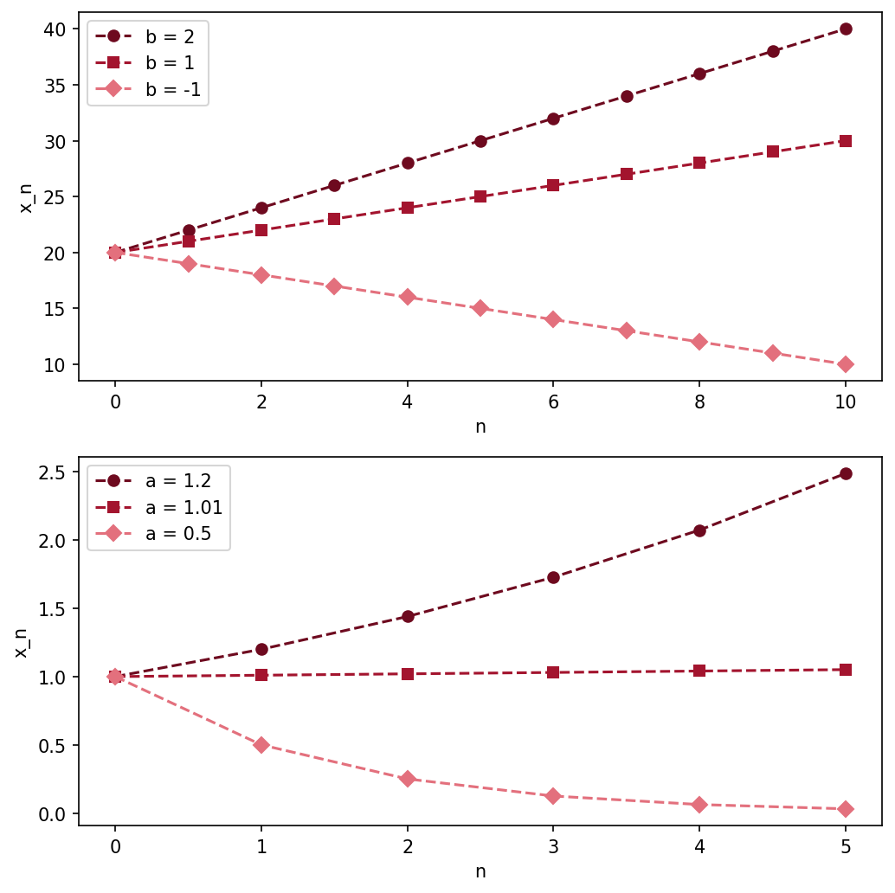
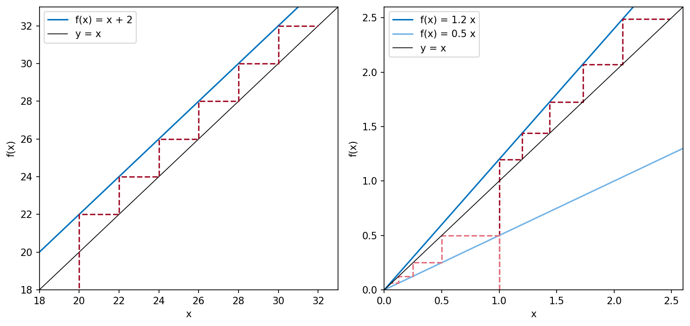
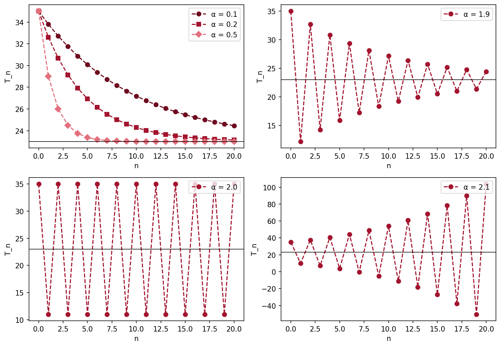
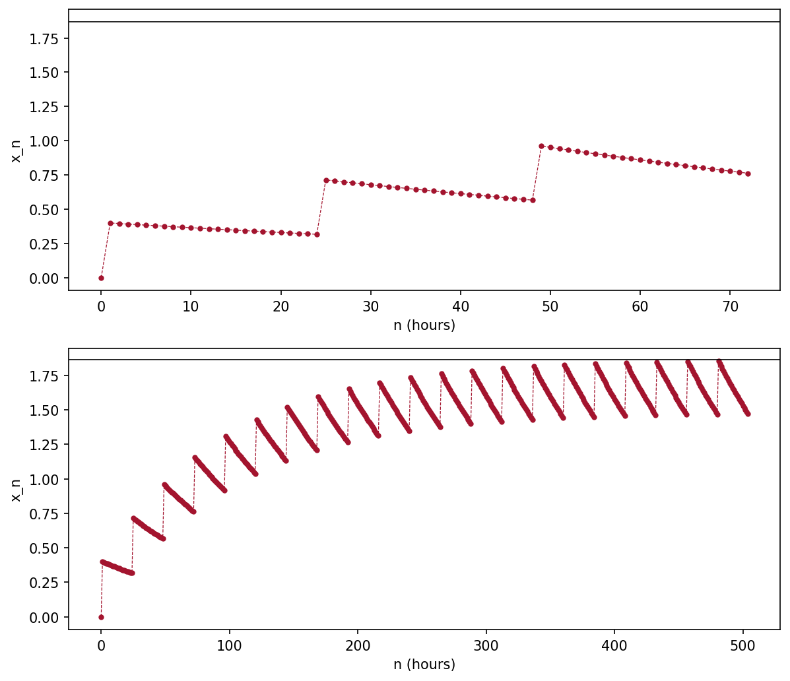

Chapter 1 · Discrete Dynamical Systems with One Variable
1.2Linear Difference Equations
In arithmetic sequences the same amount is added at each step, in geometric sequences the terms are multiplied by the same factor. Both are special cases of the linear difference equation xn+1 = a xn + b, which also includes Newton's law of cooling. With a varying inflow bn it describes the level of a drug.
For each figure of the section you will find the program that produces it. Change parameters and initial values and observe what happens. Figure and equation numbers refer to the book.
Fig. 1.11
Arithmetic and geometric sequences
xn+1 = xn + b or xn+1 = a xn
Arithmetic sequences grow or decrease linearly, geometric ones exponentially. For 0 < a < 1 the geometric sequence tends to 0, for a > 1 it grows beyond all bounds.

# Fig. 1.11: Arithmetic and geometric sequences (book, Section 1.2, Eq. 1.11 and 1.13)
# top: x_{n+1} = x_n + b with x_0 = 20; bottom: x_{n+1} = a x_n with x_0 = 1
# (c) 2026 Philipp Kügler · Program for the book "Dynamical Systems in the Life Sciences" · MIT License (see LICENSE)
using Printf, Plots
rot = [RGB(0.43, 0.04, 0.12), RGB(0.64, 0.08, 0.18), RGB(0.89, 0.44, 0.49)] # shades of red for several sequences
zeichen = [:circle, :rect, :diamond]
p1 = plot(xlabel = "n", ylabel = "x_n", legend = :topleft)
n = 0:10
for (i, b) in enumerate([2, 1, -1])
x = 20 .+ b .* n # solution formula (1.12)
plot!(p1, n, x, ls = :dash, marker = zeichen[i], color = rot[i], label = "b = $b")
@printf("b = %g: x_10 = %g\n", b, x[end])
end
p2 = plot(xlabel = "n", ylabel = "x_n", legend = :topleft)
n = 0:5
for (i, a) in enumerate([1.2, 1.01, 0.5])
x = a .^ n # solution formula (1.14) with x_0 = 1
plot!(p2, n, x, ls = :dash, marker = zeichen[i], color = rot[i], label = "a = $a")
@printf("a = %g: x_5 = %.4f\n", a, x[end])
end
display(plot(p1, p2, layout = (2, 1), size = (700, 650)))% Fig. 1.11: Arithmetic and geometric sequences (book, Section 1.2, Eq. 1.11 and 1.13)
% top: x_{n+1} = x_n + b with x_0 = 20; bottom: x_{n+1} = a x_n with x_0 = 1
% (c) 2026 Philipp Kügler · Program for the book "Dynamical Systems in the Life Sciences" · MIT License (see LICENSE)
rot = [0.43 0.04 0.12; 0.64 0.08 0.18; 0.89 0.44 0.49]; % shades of red for several sequences
marker = 'osd';
subplot(2, 1, 1); hold on
n = 0:10; bs = [2 1 -1];
for i = 1:3
x = 20 + bs(i) * n; % solution formula (1.12)
plot(n, x, ['--' marker(i)], 'Color', rot(i, :), 'DisplayName', sprintf('b = %g', bs(i)));
fprintf('b = %g: x_10 = %g\n', bs(i), x(end));
end
hold off; xlabel('n'); ylabel('x_n'); legend('show');
subplot(2, 1, 2); hold on
n = 0:5; as = [1.2 1.01 0.5];
for i = 1:3
x = as(i) .^ n; % solution formula (1.14) with x_0 = 1
plot(n, x, ['--' marker(i)], 'Color', rot(i, :), 'DisplayName', sprintf('a = %g', as(i)));
fprintf('a = %g: x_5 = %.4f\n', as(i), x(end));
end
hold off; xlabel('n'); ylabel('x_n'); legend('show');# Fig. 1.11: Arithmetic and geometric sequences (book, Section 1.2, Eq. 1.11 and 1.13)
# top: x_{n+1} = x_n + b with x_0 = 20; bottom: x_{n+1} = a x_n with x_0 = 1
# (c) 2026 Philipp Kügler · Program for the book "Dynamical Systems in the Life Sciences" · MIT License (see LICENSE)
import numpy as np
import matplotlib.pyplot as plt
rot = [(0.43, 0.04, 0.12), (0.64, 0.08, 0.18), (0.89, 0.44, 0.49)] # shades of red for several sequences
fig, axs = plt.subplots(2, 1, figsize=(7, 7))
n = np.arange(11)
for b, c, m in zip([2, 1, -1], rot, "osD"):
x = 20 + b * n # solution formula (1.12)
axs[0].plot(n, x, "--", marker=m, color=c, label=f"b = {b}")
print(f"b = {b}: x_10 = {x[-1]}")
axs[0].set_xlabel("n"); axs[0].set_ylabel("x_n"); axs[0].legend()
n = np.arange(6)
for a, c, m in zip([1.2, 1.01, 0.5], rot, "osD"):
x = a**n # solution formula (1.14) with x_0 = 1
axs[1].plot(n, x, "--", marker=m, color=c, label=f"a = {a}")
print(f"a = {a}: x_5 = {x[-1]:.4f}")
axs[1].set_xlabel("n"); axs[1].set_ylabel("x_n"); axs[1].legend()
plt.tight_layout()
plt.show()# Fig. 1.11: Arithmetic and geometric sequences (book, Section 1.2, Eq. 1.11 and 1.13)
# top: x_{n+1} = x_n + b with x_0 = 20; bottom: x_{n+1} = a x_n with x_0 = 1
# (c) 2026 Philipp Kügler · Program for the book "Dynamical Systems in the Life Sciences" · MIT License (see LICENSE)
rot <- c(rgb(0.43, 0.04, 0.12), rgb(0.64, 0.08, 0.18), rgb(0.89, 0.44, 0.49)) # shades of red for several sequences
zeichen <- c(16, 15, 18)
par(mfrow = c(2, 1))
n <- 0:10; bs <- c(2, 1, -1)
plot(NULL, xlim = c(0, 10), ylim = c(8, 42), xlab = "n", ylab = "x_n")
for (i in 1:3) {
x <- 20 + bs[i] * n # solution formula (1.12)
lines(n, x, type = "o", lty = 2, pch = zeichen[i], col = rot[i])
cat(sprintf("b = %g: x_10 = %g\n", bs[i], x[length(x)]))
}
legend("topleft", legend = sprintf("b = %g", bs), col = rot, pch = zeichen, lty = 2)
n <- 0:5; as <- c(1.2, 1.01, 0.5)
plot(NULL, xlim = c(0, 5), ylim = c(0, 2.6), xlab = "n", ylab = "x_n")
for (i in 1:3) {
x <- as[i]^n # solution formula (1.14) with x_0 = 1
lines(n, x, type = "o", lty = 2, pch = zeichen[i], col = rot[i])
cat(sprintf("a = %g: x_5 = %.4f\n", as[i], x[length(x)]))
}
legend("topleft", legend = sprintf("a = %g", as), col = rot, pch = zeichen, lty = 2)Output in the command window
b = 2: x_10 = 40
b = 1: x_10 = 30
b = -1: x_10 = 10
a = 1.2: x_5 = 2.4883
a = 1.01: x_5 = 1.0510
a = 0.5: x_5 = 0.0312Fig. 1.12
Update functions and staircase diagrams
f(x) = x + b or f(x) = a x
The line f(x) = x + b is parallel to the diagonal and never intersects it. The line f(x) = a x passes through the origin; whether the staircase runs toward it or away from it depends on a.

# Fig. 1.12: Update functions and staircase diagrams (book, Section 1.2)
# left: arithmetic sequence f(x) = x + 2 with x_0 = 20; right: geometric sequence f(x) = a x with a = 1.2 and 0.5, x_0 = 1
# (c) 2026 Philipp Kügler · Program for the book "Dynamical Systems in the Life Sciences" · MIT License (see LICENSE)
using Printf, Plots
blau = RGB(0, 0.447, 0.741); hellblau = RGB(0.45, 0.70, 0.90)
rot = RGB(0.64, 0.08, 0.18); hellrot = RGB(0.89, 0.44, 0.49)
function treppe(x) # points of the staircase: vertically to the graph, horizontally to the diagonal
px = [x[1]]; py = [0.0]
for k in 1:length(x) - 1
append!(px, [x[k], x[k + 1]]); append!(py, [x[k + 1], x[k + 1]])
end
return px, py
end
p1 = plot([18, 33], [20, 35], color = blau, lw = 2, label = "f(x) = x + 2", xlims = (18, 33), ylims = (18, 33),
xlabel = "x", ylabel = "f(x)", legend = :bottomright)
plot!(p1, [18, 33], [18, 33], color = :black, label = "y = x")
x = zeros(7); x[1] = 20
for k in 1:6
x[k + 1] = x[k] + 2
end
plot!(p1, treppe(x)..., ls = :dash, color = rot, label = "")
println("arithmetic: ", join([@sprintf("%g", v) for v in x], " "))
p2 = plot([0, 2.6], [0, 2.6], color = :black, legend = false, xlims = (0, 2.6), ylims = (0, 2.6), xlabel = "x", ylabel = "f(x)")
for (a, N, cF, cT) in [(1.2, 5, blau, rot), (0.5, 4, hellblau, hellrot)]
plot!(p2, [0, 2.6], [0, a * 2.6], color = cF, lw = 2)
x = zeros(N + 1); x[1] = 1
for k in 1:N
x[k + 1] = a * x[k]
end
plot!(p2, treppe(x)..., ls = :dash, color = cT)
println(@sprintf("geometric a = %g: ", a), join([@sprintf("%.4f", v) for v in x], " "))
end
display(plot(p1, p2, layout = (1, 2), size = (900, 420)))% Fig. 1.12: Update functions and staircase diagrams (book, Section 1.2)
% left: arithmetic sequence f(x) = x + 2 with x_0 = 20; right: geometric sequence f(x) = a x with a = 1.2 and 0.5, x_0 = 1
% (c) 2026 Philipp Kügler · Program for the book "Dynamical Systems in the Life Sciences" · MIT License (see LICENSE)
blau = [0 0.447 0.741]; hellblau = [0.45 0.70 0.90];
rot = [0.64 0.08 0.18]; hellrot = [0.89 0.44 0.49];
subplot(1, 2, 1); hold on
plot([18 33], [20 35], 'Color', blau);
plot([18 33], [18 33], 'k-');
x = zeros(1, 7); x(1) = 20;
for k = 1:6
x(k + 1) = x(k) + 2;
end
px = x(1); py = 0;
for k = 1:6
px = [px x(k) x(k + 1)]; py = [py x(k + 1) x(k + 1)];
end
plot(px, py, '--', 'Color', rot);
fprintf('arithmetic: '); fprintf('%g ', x); fprintf('\n');
hold off; axis([18 33 18 33]); xlabel('x'); ylabel('f(x)'); legend('f(x) = x + 2', 'y = x', 'Location', 'southeast');
subplot(1, 2, 2); hold on
as = [1.2 0.5]; schritte = [5 4]; farbeF = [blau; hellblau]; farbeT = [rot; hellrot];
for i = 1:2
a = as(i); N = schritte(i);
plot([0 2.6], [0 a * 2.6], 'Color', farbeF(i, :));
x = zeros(1, N + 1); x(1) = 1;
for k = 1:N
x(k + 1) = a * x(k);
end
px = x(1); py = 0;
for k = 1:N
px = [px x(k) x(k + 1)]; py = [py x(k + 1) x(k + 1)];
end
plot(px, py, '--', 'Color', farbeT(i, :));
fprintf('geometric a = %g: ', a); fprintf('%.4f ', x); fprintf('\n');
end
plot([0 2.6], [0 2.6], 'k-');
hold off; axis([0 2.6 0 2.6]); xlabel('x'); ylabel('f(x)');# Fig. 1.12: Update functions and staircase diagrams (book, Section 1.2)
# left: arithmetic sequence f(x) = x + 2 with x_0 = 20; right: geometric sequence f(x) = a x with a = 1.2 and 0.5, x_0 = 1
# (c) 2026 Philipp Kügler · Program for the book "Dynamical Systems in the Life Sciences" · MIT License (see LICENSE)
import numpy as np
import matplotlib.pyplot as plt
blau, rot = (0, 0.447, 0.741), (0.64, 0.08, 0.18)
def treppe(ax, f, x0, N, farbe):
x = [x0]
for _ in range(N):
x.append(f(x[-1]))
px, py = [x[0]], [0]
for k in range(N):
px += [x[k], x[k + 1]]; py += [x[k + 1], x[k + 1]]
ax.plot(px, py, "--", color=farbe)
return x
fig, axs = plt.subplots(1, 2, figsize=(10, 4.8))
ax = axs[0]
xx = np.array([18, 33])
ax.plot(xx, xx + 2, color=blau, label="f(x) = x + 2")
ax.plot(xx, xx, "k", lw=0.8, label="y = x")
x = treppe(ax, lambda v: v + 2, 20, 6, rot)
print("arithmetic:", " ".join(str(v) for v in x))
ax.set_xlim(18, 33); ax.set_ylim(18, 33); ax.set_xlabel("x"); ax.set_ylabel("f(x)"); ax.legend()
ax = axs[1]
xx = np.array([0, 2.6])
for a, farbe, N in [(1.2, rot, 5), (0.5, (0.89, 0.44, 0.49), 4)]:
ax.plot(xx, a * xx, color=blau if a > 1 else (0.45, 0.70, 0.90), label=f"f(x) = {a} x")
x = treppe(ax, lambda v, a=a: a * v, 1.0, N, farbe)
print(f"geometric a = {a}:", " ".join(f"{v:.4f}" for v in x))
ax.plot(xx, xx, "k", lw=0.8, label="y = x")
ax.set_xlim(0, 2.6); ax.set_ylim(0, 2.6); ax.set_xlabel("x"); ax.set_ylabel("f(x)"); ax.legend()
plt.tight_layout()
plt.show()# Fig. 1.12: Update functions and staircase diagrams (book, Section 1.2)
# left: arithmetic sequence f(x) = x + 2 with x_0 = 20; right: geometric sequence f(x) = a x with a = 1.2 and 0.5, x_0 = 1
# (c) 2026 Philipp Kügler · Program for the book "Dynamical Systems in the Life Sciences" · MIT License (see LICENSE)
blau <- rgb(0, 0.447, 0.741); hellblau <- rgb(0.45, 0.70, 0.90)
rot <- rgb(0.64, 0.08, 0.18); hellrot <- rgb(0.89, 0.44, 0.49)
treppe <- function(x) { # points of the staircase: vertically to the graph, horizontally to the diagonal
px <- x[1]; py <- 0
for (k in 1:(length(x) - 1)) { px <- c(px, x[k], x[k + 1]); py <- c(py, x[k + 1], x[k + 1]) }
list(px = px, py = py)
}
par(mfrow = c(1, 2))
plot(c(18, 33), c(20, 35), type = "l", col = blau, lwd = 2, xlim = c(18, 33), ylim = c(18, 33), xlab = "x", ylab = "f(x)")
abline(0, 1)
x <- numeric(7); x[1] <- 20
for (k in 1:6) x[k + 1] <- x[k] + 2
t <- treppe(x); lines(t$px, t$py, lty = 2, col = rot)
cat("arithmetic:", sprintf("%g", x), "\n")
legend("bottomright", legend = c("f(x) = x + 2", "y = x"), col = c(blau, "black"), lwd = c(2, 1))
plot(NULL, xlim = c(0, 2.6), ylim = c(0, 2.6), xlab = "x", ylab = "f(x)")
abline(0, 1)
as <- c(1.2, 0.5); schritte <- c(5, 4); farbeF <- c(blau, hellblau); farbeT <- c(rot, hellrot)
for (i in 1:2) {
a <- as[i]; N <- schritte[i]
lines(c(0, 2.6), c(0, a * 2.6), col = farbeF[i], lwd = 2)
x <- numeric(N + 1); x[1] <- 1
for (k in 1:N) x[k + 1] <- a * x[k]
t <- treppe(x); lines(t$px, t$py, lty = 2, col = farbeT[i])
cat(sprintf("geometric a = %g:", a), sprintf("%.4f", x), "\n")
}Output in the command window
arithmetic: 20 22 24 26 28 30 32
geometric a = 1.2: 1.0000 1.2000 1.4400 1.7280 2.0736 2.4883
geometric a = 0.5: 1.0000 0.5000 0.2500 0.1250 0.0625Fig. 1.15
Newton's law of cooling
Tn+1 = Tn + α (Tu − Tn)
For 0 < α ≤ 1 the temperature approaches the ambient temperature Tu = 23 monotonically. For 1 < α < 2 it oscillates around Tu, for α = 2 it jumps between two values, for α > 2 the oscillations grow.

# Fig. 1.15: Newton's law of cooling (book, Section 1.2, Eq. 1.21)
# T_{n+1} = T_n + alpha (T^u - T_n) with T_0 = 35 and T^u = 23
# (c) 2026 Philipp Kügler · Program for the book "Dynamical Systems in the Life Sciences" · MIT License (see LICENSE)
using Printf, Plots
T0 = 35; Tu = 23; N = 20
n = 0:N
rot = [RGB(0.43, 0.04, 0.12), RGB(0.64, 0.08, 0.18), RGB(0.89, 0.44, 0.49)]; zeichen = [:circle, :rect, :diamond]
bilder = [plot(xlabel = "n", ylabel = "T_n") for _ in 1:4]
for (i, alpha) in enumerate([0.1, 0.2, 0.5, 1.9, 2.0, 2.1])
T = zeros(N + 1)
T[1] = T0
for k in 1:N
T[k + 1] = T[k] + alpha * (Tu - T[k])
end
if i <= 3 # 0 < alpha < 1: monotone approach to T^u, all in one plot
plot!(bilder[1], n, T, ls = :dash, marker = zeichen[i], color = rot[i], label = "α = $alpha")
else # 1 < alpha: oscillations
plot!(bilder[i - 2], n, T, ls = :dash, marker = :circle, color = rot[2], label = "α = $alpha")
@printf("alpha = %g: T_19 = %.3f, T_20 = %.3f\n", alpha, T[20], T[21])
end
end
for b in bilder
hline!(b, [Tu], color = :black, label = "")
end
display(plot(bilder..., layout = (2, 2), size = (900, 650)))% Fig. 1.15: Newton's law of cooling (book, Section 1.2, Eq. 1.21)
% T_{n+1} = T_n + alpha (T^u - T_n) with T_0 = 35 and T^u = 23
% (c) 2026 Philipp Kügler · Program for the book "Dynamical Systems in the Life Sciences" · MIT License (see LICENSE)
T0 = 35; Tu = 23; N = 20;
n = 0:N;
rot = [0.43 0.04 0.12; 0.64 0.08 0.18; 0.89 0.44 0.49]; marker = 'osd';
alphas = [0.1 0.2 0.5 1.9 2.0 2.1];
for i = 1:6
alpha = alphas(i);
T = zeros(1, N + 1);
T(1) = T0;
for k = 1:N
T(k + 1) = T(k) + alpha * (Tu - T(k));
end
if i <= 3 % 0 < alpha < 1: monotone approach to T^u, all in one plot
subplot(2, 2, 1); hold on
plot(n, T, ['--' marker(i)], 'Color', rot(i, :), 'DisplayName', sprintf('\\alpha = %g', alpha));
else % 1 < alpha: oscillations
subplot(2, 2, i - 2); hold on
plot(n, T, '--o', 'Color', rot(2, :), 'DisplayName', sprintf('\\alpha = %g', alpha));
fprintf('alpha = %g: T_19 = %.3f, T_20 = %.3f\n', alpha, T(20), T(21));
end
plot([0 N], [Tu Tu], 'k-', 'HandleVisibility', 'off');
hold off; xlabel('n'); ylabel('T_n'); legend('show', 'Location', 'northeast');
end# Fig. 1.15: Newton's law of cooling (book, Section 1.2, Eq. 1.21)
# T_{n+1} = T_n + alpha (T^u - T_n) with T_0 = 35 and T^u = 23
# (c) 2026 Philipp Kügler · Program for the book "Dynamical Systems in the Life Sciences" · MIT License (see LICENSE)
import numpy as np
import matplotlib.pyplot as plt
T0, Tu, N = 35.0, 23.0, 20
n = np.arange(N + 1)
def abkuehlung(alpha):
T = np.zeros(N + 1)
T[0] = T0
for k in range(N):
T[k + 1] = T[k] + alpha * (Tu - T[k])
return T
fig, axs = plt.subplots(2, 2, figsize=(10, 7))
rot = [(0.43, 0.04, 0.12), (0.64, 0.08, 0.18), (0.89, 0.44, 0.49)]
for alpha, c, m in zip([0.1, 0.2, 0.5], rot, "osD"): # 0 < alpha < 1: monotone approach to T^u
axs[0, 0].plot(n, abkuehlung(alpha), "--", marker=m, color=c, label=f"α = {alpha}")
for ax, alpha in zip([axs[0, 1], axs[1, 0], axs[1, 1]], [1.9, 2.0, 2.1]): # 1 < alpha: oscillations
T = abkuehlung(alpha)
ax.plot(n, T, "o--", color=rot[1], label=f"α = {alpha}")
print(f"α = {alpha}: T_19 = {T[19]:.3f}, T_20 = {T[20]:.3f}")
for ax in axs.flat:
ax.axhline(Tu, color="k", lw=0.8)
ax.set_xlabel("n"); ax.set_ylabel("T_n"); ax.legend(loc="upper right")
plt.tight_layout()
plt.show()# Fig. 1.15: Newton's law of cooling (book, Section 1.2, Eq. 1.21)
# T_{n+1} = T_n + alpha (T^u - T_n) with T_0 = 35 and T^u = 23
# (c) 2026 Philipp Kügler · Program for the book "Dynamical Systems in the Life Sciences" · MIT License (see LICENSE)
T0 <- 35; Tu <- 23; N <- 20
n <- 0:N
rot <- c(rgb(0.43, 0.04, 0.12), rgb(0.64, 0.08, 0.18), rgb(0.89, 0.44, 0.49)); zeichen <- c(16, 15, 18)
alphas <- c(0.1, 0.2, 0.5, 1.9, 2.0, 2.1)
par(mfrow = c(2, 2))
for (i in 1:6) {
alpha <- alphas[i]
T <- numeric(N + 1)
T[1] <- T0
for (k in 1:N) T[k + 1] <- T[k] + alpha * (Tu - T[k])
if (i <= 3) { # 0 < alpha < 1: monotone approach to T^u, all in one plot
if (i == 1) { plot(NULL, xlim = c(0, N), ylim = c(22, 36), xlab = "n", ylab = "T_n"); abline(h = Tu) }
lines(n, T, type = "o", lty = 2, pch = zeichen[i], col = rot[i])
if (i == 3) legend("topright", legend = sprintf("alpha = %g", alphas[1:3]), col = rot, pch = zeichen, lty = 2)
} else { # 1 < alpha: oscillations
plot(n, T, type = "o", lty = 2, pch = 16, col = rot[2], xlab = "n", ylab = "T_n", main = sprintf("alpha = %g", alpha))
abline(h = Tu)
cat(sprintf("alpha = %g: T_19 = %.3f, T_20 = %.3f\n", alpha, T[20], T[21]))
}
}Output in the command window
α = 1.9: T_19 = 21.379, T_20 = 24.459
α = 2.0: T_19 = 11.000, T_20 = 35.000
α = 2.1: T_19 = -50.391, T_20 = 103.730Fig. 1.16
Drug level with a daily dose
xn+1 = a xn + bn, bn = d every 24 hours
A non-autonomous example: between doses the drug is eliminated, every 24 hours the dose d = 0.4 is added. The peak values approach xmax = d/(1 − a24) ≈ 1.8664.

# Fig. 1.16: Drug level with a daily dose (book, Section 1.2, Eq. 1.23)
# x_{n+1} = a x_n + b_n, b_n = d if n is divisible by 24, otherwise 0; a = 0.99, d = 0.4, x_0 = 0, n in hours
# (c) 2026 Philipp Kügler · Program for the book "Dynamical Systems in the Life Sciences" · MIT License (see LICENSE)
using Printf, Plots
a = 0.99; d = 0.4; x0 = 0.0
N = 504 # 21 days
x = zeros(N + 1)
x[1] = x0 # x[1] is x_0
for k in 1:N
n = k - 1 # time step n
b = n % 24 == 0 ? d : 0.0 # one dose every 24 hours
x[k + 1] = a * x[k] + b
end
xmax = d / (1 - a^24) # limit of the peak values
@printf("x_max = %.4f\n", xmax)
@printf("peak value after 20 days: x_481 = %.4f\n", x[482])
rot = RGB(0.64, 0.08, 0.18)
bilder = [begin
p = plot(0:ende - 1, x[1:ende], ls = :dash, marker = :circle, ms = 2, color = rot, legend = false,
xlabel = "n (hours)", ylabel = "x_n")
hline!(p, [xmax], color = :black)
end for ende in (73, N + 1)]
display(plot(bilder..., layout = (2, 1), size = (800, 600)))% Fig. 1.16: Drug level with a daily dose (book, Section 1.2, Eq. 1.23)
% x_{n+1} = a x_n + b_n, b_n = d if n is divisible by 24, otherwise 0; a = 0.99, d = 0.4, x_0 = 0, n in hours
% (c) 2026 Philipp Kügler · Program for the book "Dynamical Systems in the Life Sciences" · MIT License (see LICENSE)
a = 0.99; d = 0.4; x0 = 0;
N = 504; % 21 days
x = zeros(1, N + 1);
x(1) = x0; % x(1) is x_0
for k = 1:N
n = k - 1; % time step n
if mod(n, 24) == 0 % one dose every 24 hours
b = d;
else
b = 0;
end
x(k + 1) = a * x(k) + b;
end
xmax = d / (1 - a^24); % limit of the peak values
fprintf('x_max = %.4f\n', xmax);
fprintf('peak value after 20 days: x_481 = %.4f\n', x(482));
rot = [0.64 0.08 0.18];
enden = [73 N + 1];
for p = 1:2
subplot(2, 1, p);
plot(0:enden(p) - 1, x(1:enden(p)), '--o', 'Color', rot, 'MarkerSize', 3); hold on
plot([0 enden(p) - 1], [xmax xmax], 'k-'); hold off
xlabel('n (hours)'); ylabel('x_n');
end# Fig. 1.16: Drug level with a daily dose (book, Section 1.2, Eq. 1.23)
# x_{n+1} = a x_n + b_n, b_n = d if n is divisible by 24, otherwise 0; a = 0.99, d = 0.4, x_0 = 0, n in hours
# (c) 2026 Philipp Kügler · Program for the book "Dynamical Systems in the Life Sciences" · MIT License (see LICENSE)
import numpy as np
import matplotlib.pyplot as plt
a, d, x0 = 0.99, 0.4, 0.0
N = 504 # 21 days
x = np.zeros(N + 1)
x[0] = x0
for n in range(N):
b = d if n % 24 == 0 else 0.0 # one dose every 24 hours
x[n + 1] = a * x[n] + b
xmax = d / (1 - a**24) # limit of the peak values
print(f"x_max = {xmax:.4f}")
print(f"peak value after 20 days: x_481 = {x[481]:.4f}")
fig, axs = plt.subplots(2, 1, figsize=(8, 7))
for ax, ende in zip(axs, (73, N + 1)):
ax.plot(np.arange(ende), x[:ende], "o--", color=(0.64, 0.08, 0.18), ms=3, lw=0.6)
ax.axhline(xmax, color="k", lw=0.8)
ax.set_xlabel("n (hours)"); ax.set_ylabel("x_n")
plt.tight_layout()
plt.show()# Fig. 1.16: Drug level with a daily dose (book, Section 1.2, Eq. 1.23)
# x_{n+1} = a x_n + b_n, b_n = d if n is divisible by 24, otherwise 0; a = 0.99, d = 0.4, x_0 = 0, n in hours
# (c) 2026 Philipp Kügler · Program for the book "Dynamical Systems in the Life Sciences" · MIT License (see LICENSE)
a <- 0.99; d <- 0.4; x0 <- 0
N <- 504 # 21 days
x <- numeric(N + 1)
x[1] <- x0 # x[1] is x_0
for (k in 1:N) {
n <- k - 1 # time step n
b <- if (n %% 24 == 0) d else 0 # one dose every 24 hours
x[k + 1] <- a * x[k] + b
}
xmax <- d / (1 - a^24) # limit of the peak values
cat(sprintf("x_max = %.4f\n", xmax))
cat(sprintf("peak value after 20 days: x_481 = %.4f\n", x[482]))
rot <- rgb(0.64, 0.08, 0.18)
par(mfrow = c(2, 1))
for (ende in c(73, N + 1)) {
plot(0:(ende - 1), x[1:ende], type = "o", lty = 2, pch = 16, cex = 0.4, col = rot, xlab = "n (hours)", ylab = "x_n")
abline(h = xmax)
}Output in the command window
x_max = 1.8664
peak value after 20 days: x_481 = 1.8546Try it in the browser · no installation
Linear difference equation
xn+1 = a xn + b. With a = 1 you get an arithmetic sequence, with b = 0 a geometric one, with a = 1 − α and b = α Tu the law of cooling.
MATLAB apps from the course
Download, put into a folder, and type the name without extension in MATLAB, e.g. arithmetik_app. The apps use the graphical user interface of MATLAB and do not run in GNU Octave. Their user interface is in German.
- arithmetik_app.mArithmetic sequence with staircase diagram
- geometrik_app.mGeometric sequence with staircase diagram
- linear_app.mLinear difference equation with staircase diagram
- lineare_dgl_app.mSequences and linear difference equations
- newton_abkuehlung_app.mNewton's law of cooling